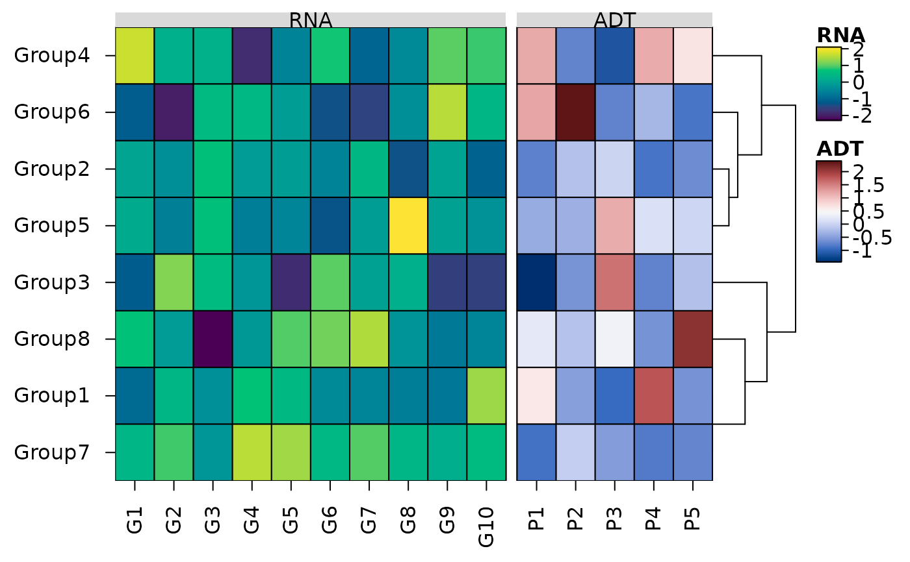

Heatmaps of the same rows side by side, each with its own colour scale
Source:R/heat_map_align.R
heat_map_align.Rdheat_map_align() joins several data sets measured on the same rows
e.g. the genes (RNA) and surface proteins (ADT) of the same cells or groups of cells, or the expression and methylation of the same samples - into one heatmap: the rows are lined up, in one order, and each data set is a block of columns with its own colour scale and legend, separated and labelled by name, as ComplexHeatmap's heatmap lists draw them. The rows are clustered (
tree = TRUE) or split into k-means clusters (tree_kmeans) on themaindata set alone, so its order holds for the others too.
Usage
heat_map_align(
x,
main = 1,
axis = c("x", "y"),
scale = NULL,
scale_method = "zscore",
cell_col_scale = NULL,
cell_col_scale_limits = NULL,
cell_col_scale_center = NULL,
tree = FALSE,
tree_kmeans = NULL,
tree_blocks = FALSE,
dist_method = "euclidean",
clust_method = "complete",
tree_order = "default",
...
)Arguments
- x
a named list of two or more numeric matrices or data.frames (e.g. from
heat_map_summariseorheat_map_score), whose rows are the same and named - matched by name, in the order of the first. Withaxis = "y"they share their columns instead, and are stacked as blocks of rows.- main
the data set (name or position) whose rows are clustered, set to the first by default.
- axis
"x"(default) to place the data sets side by side as blocks of columns, or"y"to stack them as blocks of rows that share their columns (e.g. features as rows and cells as columns).- scale, scale_method
how to scale each data set before it is drawn:
scale"column","row"orNULL(default, no scaling), or a list with one per data set, andscale_methodas inheat_map(z-scores by default).- cell_col_scale, cell_col_scale_limits, cell_col_scale_center
the colour scale, limits and centre of each data set: one for all of them, or a list with one per data set (named or in order). By default every data set uses the default colour scale over its own values.
- tree
logical, whether to draw a dendrogram of the shared rows (columns with
axis = "y") clustered on themaindata set, set toFALSEby default (in the order of the first data set).- tree_kmeans
the number of k-means clusters of the shared rows (columns with
axis = "y"), found on themaindata set, orNULL.- tree_blocks
logical, whether to cluster the columns (rows with
axis = "y") within each data set, set toFALSEby default.- dist_method, clust_method, tree_order
how the shared rows are clustered: as
dist_method,clust_methodandtree_order_yofheat_map.- ...
other arguments of
heat_map.
Value
an object of class heat_map, as returned by
heat_map.
Details
Each data set is scaled on its own (scale), so scale = "row"
z-scores each row within each block. Columns can be clustered within each
block with tree_blocks = TRUE. With axis = "y" the data sets
are stacked as blocks of rows instead, sharing their columns, which
tree and tree_kmeans then cluster. Every other argument of
heat_map can be passed in ..., and replaces the
settings of heat_map_align().
See also
heat_map (cell_col_blocks_x),
heat_map_summarise
Examples
set.seed(1)
groups <- paste0("Group", 1:8)
rna <- matrix(rnorm(8 * 10, 8, 2), 8, dimnames = list(groups, paste0("G", 1:10)))
adt <- matrix(rexp(8 * 5, 1 / 300), 8, dimnames = list(groups, paste0("P", 1:5)))
# Genes and proteins of the same groups, the rows clustered on the genes
heat_map_align(
list(RNA = rna, ADT = adt),
scale = "column",
cell_col_scale = list("viridis", "Blue-Red 3"),
tree = TRUE,
popup = FALSE
)
